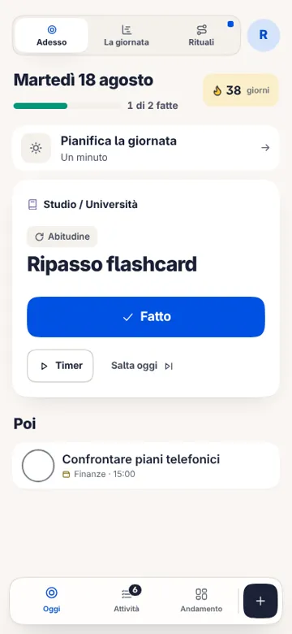
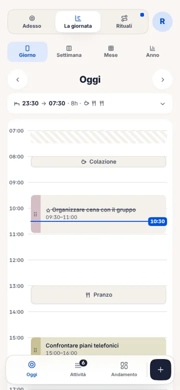
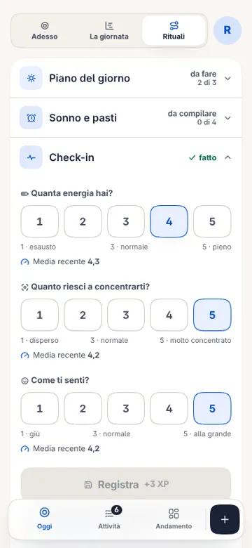
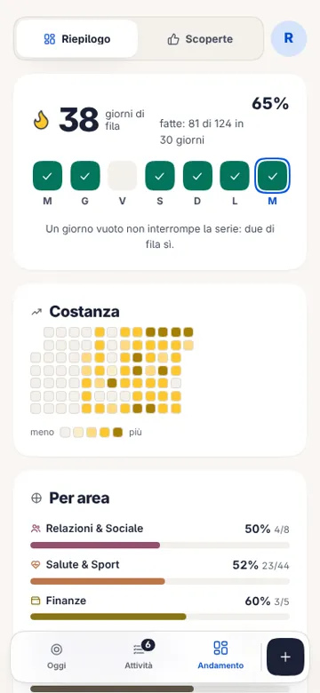

LifeMax
LifeMax è un'app gratuita per organizzare la giornata. Ti mostra una cosa alla volta da fare adesso, ti aiuta a pianificare la giornata e a costruire abitudini, e ti fa vedere come vanno le cose nel tempo.
Apri LifeMaxFunziona nel browser, su telefono, tablet e computer. Si usa anche senza account; l'accesso con Google serve solo a sincronizzare i tuoi dispositivi.




Cosa fa
Una cosa alla volta
La schermata Oggi mostra solo la prossima cosa da fare, con un timer di concentrazione.
Pianifica la giornata
Metti le attività sulle ore del giorno, dividile per aree della vita (studio, lavoro, salute…) e spostale quando cambia il programma.
Abitudini e rituali
Abitudini da spuntare, piano del mattino, check-in e riflessione della sera.
Andamento
Giorni di fila, costanza per area e tempo di concentrazione, per vedere cosa funziona.
Google Calendar e Outlook
Puoi collegare, se vuoi, i tuoi calendari Google o Microsoft. Scegli quali calendari collegare: i loro eventi compaiono in LifeMax come attività della giornata, e quando sposti, rinomini o elimini una di quelle attività in LifeMax, la stessa modifica avviene nel calendario. Se hai fatto l'accesso con Google, il collegamento resta attivo anche ad app chiusa: il server di LifeMax tiene il permesso cifrato e il calendario allineato. LifeMax usa i dati del calendario solo per questo. Non li vende, non li condivide, non li usa per pubblicità e non li usa per addestrare o alimentare intelligenza artificiale. I dettagli sono nell'informativa privacy.
Cosa non fa
LifeMax non genera immagini, video o altri contenuti con l'intelligenza artificiale, e non usa le API di Google per nessuno scopo diverso da quelli descritti in questa pagina.